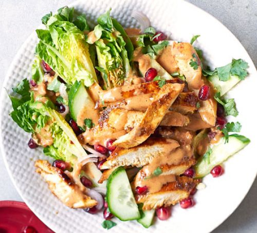
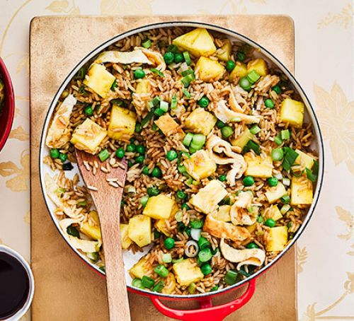
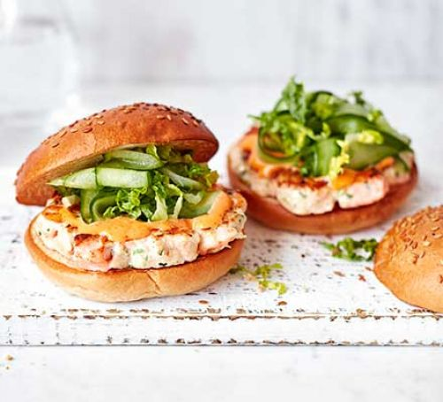
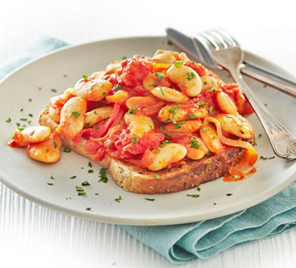

Ingredients:
- 1 tbsp tamari
- 1 tsp medium curry powder
- 1/4 tsp ground cumin
- 1 garlic clove, finely grated
- 1 tsp clear honey
- 2 skinless chicken breast fillets
- 1 tbsp crunchy peanut butter
- 1 tbsp sweet chili sauce
- 1 tbsp lime juice
- A little sunflower oil
- 2 pieces of wedged lettuce
- 1/4 cucumber, halved and sliced
- 1 banana shallot, haved and sliced thinly
- Handful of chopped coriander
- 1/2 pomegranate (seeds only)

Method:
- Pour the tamari into a large dish and stir in the curry powder,
cumin, garlic and honey. Mix well.
- Slice the chicken breasts in half horizontally to make 4 fillets
in total, then add to the marinade and mix well to coat. Set aside in the fridge
for at least 1 hr, or overnight, to allow the flavours to penetrate the chicken.
- While you're waiting, mix the peanut butter with the chilli sauce,
lime juice, and 1 tbsp water to make a spoonable sauce.
- When ready to cook the chicken, wipe a large non-stick frying pan
with a little oil. Add the chicken and cook, covered with a lid, for 5-6 mins on
a medium heat, turning the fillets over for the last min, until cooked but still
moist. Set aside, covered, to rest for a few mins.
- While the chicken rests, toss the lettuce wedges with the cucumber,
shallot, coriander and pomegranate, and pile onto plates. Spoon over a little sauce.
- Slice the chicken, pile on top of the salad and spoon over the remaining
sauce. Eat while the chicken is still warm.
This recipe is high in protein, more than half of a person's
daily needs. It also contians some vegetables, and is perfect for lunchboxes. It is easy
to make, taking only 15 minutes to prepare. Contains 2 serves.
Ingredients:
- 1 1/2 tbsp sunflower or vegetable oil
- 2 eggs, beaten
- 2 garlic clove
- Small bunch of spring onions, chopped
- 1/2 tsp Chinese five-spice powder
- 400g cooked long-grain rice
- 85g frozen peas
- 2 tsp sesame oil
- 2 tbsp low-salt soy sauce
- 400g fresh pineapple, chopped into chunks

Method:
- Heat 1 tbsp oil in a wok.
- Add the eggs, swirling them up the sides, to make a thin omelette.
- Once cooked through, roll the omelette onto a chopping board and
cut into ribbons.
- Heat the remaining oil, adding the garlic, onions and five-spice
- Stir-fry until sizzling, then add the rice, peas, sesame oil and soy.
- Cook over a high heat until the rice is hot, then stir through the
pineapple and omelette ribbons.
About this recipe:
This recipe is a delicious mixture of fried rice and pineapple. It's vegetarian
and takes only 20 minutes to prepare. Pineapple fried rice is rich in carbohydrates
, meaning that it is great if you are a relatively active person. This recipe has
four serves.
You will need:
- 180g pack peeled raw prawns, roughly chopped
- 4 skinless salmon fillets, chopped into small chunks
- 3 spring onions, roughly chopped
- 1 lemon, zested and juiced
- small pack of coriander
- 60g mayonnaise or Greek yoghurt
-
- 4 tsp chilli sauce
- 2 little gem lettuces, shredded
-
- 1 cucumber, peeled into ribbons
-
- 1 tbsp olive oil
- 4 seeded burger buns, toasted, to serve

Method:
- Briefly blitz half the prawns, half the salmon, the spring
onions, lemon zest and half the coriander in a food processor until it forms
a coarse paste.
- Tip into a bowl, stir in the rest of the prawns and salmon,
season well and shape into four burgers. Chill for 10 mins.
- Mix the mayo and chilli sauce together in a small bowl,
season and add some lemon juice to taste.
- Mix the lettuce with the cucumber, dress with a little of the
remaining lemon juice and 1 tsp olive oil, then set aside.
- Heat the remaining oil in a large frying pan and fry the burgers
for 3-4 mins each side or until they have a nice crust and the fish is cooked
through.
- Serve with the salad on the side or inside the toasted buns
Do you like burgers? Well, guess what! It's your lucky day! These
prawn and salmon burgers are not only delicious, but healthy too! They are rich
in OMEGA-3 and proteins. This recipe creates 4 serves, and is
perfect for lunchboxes.
Ingredients:
- 1/2 tbsp olive oil, and a bit more for drizzling
- 1/2 small onion, sliced
- 1/2 small red pepper, thinly sliced into strips
- 1 garlic clove, halved
- 227g can chopped tomatoes
- 1/2 tsp smoked paprika
- 2 tsp red wine vinegar
- 210g can butter beans or chickpeas, drained
- 1/4 tsp sugar
- 1 slice seeded bread
- A few parsley sprigs, finely chopped

Method:
- Heat the oil in a small pan, add the onion and pepper, and fry
gently until soft (about 10-15 mins)
- Crush half the garlic and add this to the pan, along with the
tomatoes, paprika, vinegar, beans, sugar and some seasoning.
- Bring to a simmer and cook for 10-15 mins or until slightly
reduced and thickened.
- Toast the bread, rub with the remaining garlic and drizzle with
a little oil.
- Spoon the beans over the toast, drizzle with a little more oil
and scatter over the parsley.
This recipe has a delicious aesthetic appeal to it, and it tastes
as good as it looks. Smoky beans on toast consists of one serving, along with
plenty of fibre to boost your digestion. This recipe
is vegetarian and can be perpared in 25-35 minutes.